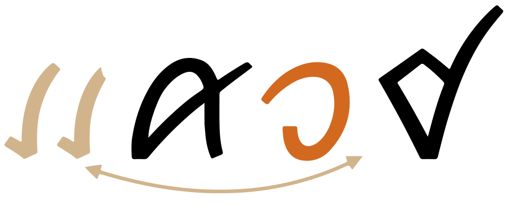

This page brings together basic information about the Tai Viet script and its use for the Tai Dam language. It aims to provide a brief, descriptive summary of the modern, printed orthography and typographic features, and to advise how to write Tai Dam using Unicode.
The Tai Viet script is used for writing the Tai Dam (Black Tai or Tai Noir), Tai Dón (White Tai or Tai Blanc), Tai Daeng, Thai Song (Lao Song or Lao Song Dam) and Tày Tac languages spoken in Vietnam, Laos, China and Thailand. There is also a diaspora in the United States, Australia and France.
The total population using the three languages, across all countries, is estimated to be 1.3 million (Tai Dam 764,000, Tai Dón 490,000, Thai Song 32,000). The script is still used by the Tai people in Vietnam, and there is a desire to introduce it into formal education there.
ꪼꪕꪒꪾ
Little is known about the origin of the Tai Viet script. It appears to have been derived from the Thai script around the 16th century.
Significant variation occurs in the orthographic conventions of the Tai languages, as well as in their phonologies. A unified, standardized version of the script, with an agreed upon core set of characters, was developed at a UNESCO-sponsored workshop in 2006, and subsequently accepted for encoding in The Unicode Standard.
The script is an alphabet. Both consonants and vowels are indicated by letters. See the table to the right for a brief overview of features for the modern Tai Dam orthography.
The Tai Viet script is heavily syllable-based, with exceptions being a very small number of unstressed initial syllables, and loan words.
Tai Viet text runs left to right in horizontal lines. Words are separated by spaces, although this is a recent innovation.
Tai Dam uses 42 consonant charactes, all neatly divided into 2 classes. Each consonant is associated with a high or low class to indicate tone. Tone is indicated by a combination of the consonant class, the syllable type (checked/unchecked), plus any tone mark.
Syllable-final consonant sounds use a subset of 8 ordinary consonant letters, but since there is no inherent vowel, it is still simple to detect syllable boundaries. Syllable-final consonant sounds are also built into 6 vowel-consonant graphemes.
Tai Viet uses visual placement: only the vowel components that appear above or below the consonant are combining marks; the others are ordinary spacing characters that are typed in the order seen.
This page lists 6 multipart vowels, made from 6 vowel signs and 3 consonants. Multipart vowels can involve up to 3 glyphs, though usually only 2, and glyphs can surround the base consonant(s) on 2 sides.
Tone can be indicated either by diacritics or ordinary spacing characters. Both are a recent innovation. Combining tone marks always follow the root consonant and any combining vowels, ie. they come before any post-base vowel. Spacing tone marks always come at the very end of the syllable.
Click on the sounds to reveal locations in this document where they are mentioned.
Phones in a lighter colour are non-native or allophones.
Vowel sounds
Plain vowels
Diphthongs
Consonant sounds
labial
alveolar
post-
alveolar
palatal
velar
glottal
stop
pb
td
kɡ
ʔ
aspirated
tʰ
affricate
t͡ɕ
fricative
fv
s
x
h
nasal
m
n
ɲ
ŋ
approximant
w
l
j
trill/flap
r
r and ɡ are used in Vietnamese names.
Syllable-final
labial
alveolar
post-
alveolar
palatal
velar
glottal
stop
p
t
k
ʔ
nasal
m
n
ŋ
approximant
w
j
Tone
tbd
Structure
The Tai languages are almost exclusively monosyllabic. A very small number of words have an unstressed initial syllable, and loan words may be polysyllabic.b
The essential character sequence of a Tai Viet syllable is:
pre-base vowel?, root consonant(s), combining vowel?, post-base vowel?, final consonant?
The root consonant(s) may be a cluster involving labialisation. Any combining vowel goes after the root consonant(s).
Tone marks expressed as combining characters always follow the root consonant(s) and any combining vowels, which means that they come before any post-base vowel.
Tone marks expressed as spacing characters always come at the very end.
-ap. One other sequence occurs when writing the vowel-final consonant combination -ap, which is written with a vowel placed over the final low-series b, rather than over the initial consonant, eg.
ꪁꪚꪾkap
Vowels are written using a mixture of 13 ordinary spacing characters (of which 5 are also consonants) and 7 combining marks.
Tai Viet uses visual placement: only the vowel components that appear above or below the consonant are combining marks; the others are ordinary spacing characters that are typed in the order seen.
This page lists 6 multipart vowels, made from 6 vowel signs and 3 consonants. Multipart vowels can involve up to 3 glyphs, though usually only 2, and glyphs can surround the base consonant(s) on 2 sides.
There are 5 pre-base vowel glyphs (all letters), but no circumgraphs.
Combining marks used for vowels
ꪁꪲ
kiU+AA81 TAI VIET LETTER HIGH KO + U+AAB2 TAI VIET VOWEL I
Tai Dam uses the following combining marks for vowels.
ꪲ␣ꪳ␣ꪴ␣ꪷ␣ꪰ␣ꪸ␣ꪾ
Dedicated vowel letters
ꪁꪺ
kuəU+AA81 TAI VIET LETTER HIGH KO + U+AABA TAI VIET VOWEL UA
The following additional, vowel-specific characters are ordinary spacing characters, with the general category of 'letter'.
ꪶ␣ꪵ␣ꪱ␣ꪹ␣ꪺ␣ꪻ␣ꪼ␣ꪽ
Five of these are typed and stored before the onset consonant (see prebase), and only the following 3 appear after:
ꪱ ꪽ ꪺ
Consonants used for vowels
ꪁꪮ
kɔU+AA81 TAI VIET LETTER HIGH KO + U+AAAE TAI VIET LETTER LOW O
The following characters are also used to create vowel sounds, either alone or as part of a multipart vowel.
ꪮ␣ꪯ␣ꪫ␣ꪥ␣ꪚ
ꪮ and ꪯ
can represent vowels on their own. The following word in fact shows the same character being used as both consonant and vowel in the same word.b
ꪮꪮꪀ
The others are used in combination with other vowel signs, see compositeV.
Pre-base vowel signs
ꪶꪁ
koU+AAB6 TAI VIET VOWEL O + U+AA81 TAI VIET LETTER HIGH KO
Five vowel signs appear to the left of the onset consonant after which they are pronounced.
ꪹ␣ꪶ␣ꪵ␣ꪻ␣ꪼ
Like Lao, Tai Viet uses a visual encoding model, so these characters are not combining characters, but are typed and stored before the base. For example:
ꪵꪣꪫ
Note that ꪵ should not be typed as two successive ꪹ characters.
These vowel signs are placed before the start of the syllable onset. This means that in a word with more than one consonant at the start (ie. a labialised consonant) the pre-base vowel is placed to the left of the syllable-initial consonant, rather than to the left of the consonant after which it is pronounced.
fig_prebase shows an example to graphically illustrate the relationships between the characters.

A vowel sign that appears 2 characters out of sequence from where it is pronounced, because the syllable onset is 2 characters long.show composition
ꪵꪁꪫꪥ
Multipart vowels
ꪹꪁꪸ
keU+AAB9 VOWEL UEA + U+AA81 LETTER HIGH KO + U+AAB8 VOWEL IA
Vowels represented by combinations of the above characters include the following, which mostly add glyphs to different sides of the base:
ꪹꪱ␣ꪹꪸ␣ꪹꪷ␣ꪵꪫ␣ꪵꪫꪥ␣ꪚꪾ
Pre-base and post-base vowel glyphs are split around the syllable onset, which may be more than a single character. fig_prebase shows an example.
The last item in the list is rather unusual. Some dialects use the combination ꪚꪾ to make -ap,b,7 eg. ꪀꪚꪾ There are 2 possible code point orders that can be used for this: see structure.
Characters that don't appear in the combinations:
ꪲ␣ꪳ␣ꪴ␣ꪶ␣ꪮ␣ꪯ␣ꪰ␣ꪰ␣ ␣ꪻ␣ꪼ␣ꪽShow which combinations contain a given character:
ꪹ
ꪹ-ꪸ␣ꪹ-ꪷ␣ ␣ꪹ-ꪱ
ꪵ
ꪵ-ꪫ
ꪱ
ꪹ-ꪱ
ꪸ
ꪹ-ꪸ
ꪷ
ꪹ-ꪷ
ꪫ
ꪵ-ꪫ
ꪚ
-ꪚꪾ
ꪾ
-ꪚꪾ
Show details about glyph positioning
The following list shows where vowel signs are positioned around a base consonant to produce vowels, and how many instances of that pattern there are. The figure after the + sign represents combinations of Unicode characters,
5 pre-base, eg. ꪶꪁok
3 post-base, eg. ꪁꪱkā
6 superscript, eg. ꪁꪲki
1 subscript, eg. ꪁꪴku
2 pre+post-base, eg. ꪹꪁꪱɨᵊkā (kaʷ)
2 pre+superscript, eg. ꪹꪁꪱɨᵊkā (ke)
1 post+superscript, eg. ꪁꪜꪾkp̄aᵐ (kap)
Standalone vowels
There are no independent vowels, and Tai Viet represents what look like standalone vowels using a vowel sign attached to ꪮ or ꪯ, and phonetic transcriptions include an initial glottal stop.
ꪮ꪿ꪱꪉ
ꪵꪮꪚ
Tones
Until the latter part of the 20th century Tai Viet didn't mark tones other than by the consonant class. Since then, however, 2 methods have developed.
Tai Dam speakers in the United States and speakers of the Song language borrowed combining tone marks from Lao/Thai.
꪿␣꫁␣
These tone marks are typed and stored immediately after any combining vowel sign, if there is one, otherwise after the initial consonant(s).
The Tai community in Vietnam developed an alternative approach, where tone is marked by ordinary spacing characters that are typed and stored after all other elements in the syllable.
ꫀ␣ꫂ
The following chart shows how to tell which tones are associated with a syllable.
Consonant
Checked?
Tone mark
Tone
high
checked
-
5
open
-
4
꪿ or ꫀ
5
꫁ or ꫂ
6
low
checked
-
2
open
-
1
꪿ or ꫀ
2
꫁ or ꫂ
3
Vowel sounds to characters
This section maps Tai Dam vowel sounds to common graphemes in the Tai Viet orthography. Click on a grapheme to find other mentions on this page (links appear at the bottom of the page). Click on the character name to see examples and for detailed descriptions of the character(s) shown.
Plain vowels
i
ꪲ
ꪔꪲꪫ
ɨ
ꪳ
ꪜꪳꪙ
u
ꪴ
ꪄꪴ꪿ꪙ
e
ꪹ◌ꪸ
ꪹꪔꪸꪣ
o
ꪶ
ꪶꪁꪙ
ə
ꪹ◌ꪷ
ꪹꪬꪷꪉ
ɛ
ꪵ
ꪵꪀ꪿ꪙ
ɔ
ꪷ
ꪝꪷ
ꪯ
ꪮ
ꪮꪮꪀ
a
ꪰ
ꪔꪰꪒ
aː
ꪱ
ꪮ꪿ꪱꪉ
Diphthongs and other combinations
iə
ꪸ
ꪣꪸ
ɨə
ꪹ
ꪹꪎ
uə
ꪺ
ꪎ꫁ꪺꪉ
ʷɛ
ꪵ◌ꪫ
ꪵ◌ꪫꪥ in some dialects, to avoid ambiguity.
ꪵꪁꪫꪥ
əw
ꪻ
ꪻꪐ꪿
aj
ꪼ
ꪼꪒ꫁
aːw
ꪹ◌ꪱ
ꪹꪉꪱ
am
ꪾ
ꪁꪾ
an
ꪽ
ꪜ꫁ꪽ
ap
ꪚꪾ
ꪀꪚꪾ
Consonants
Consonant summary table
The following table summarises the main consonant to character assigments.
For initial consonants, the left column shows high class consonants, and the right low class.
Three pairs of consonants are used for the Tai Don language, but not for Tai Dam.btd They are:
ꪟ␣ꪞ␣ꪍ␣ꪌ␣ꪃ␣ꪂ
Onsets
The consonant wa can appear immediately after the initial consonant in a syllable. It is written using ꪫ.
The pronunciation of a syllable containing WA in non-initial position can be ambiguous, unless there is a diacritic, since the WA may or may not be a final consonant.b Compare
ꪀꪲꪫḵiwꪀꪫꪲḵwi
and
ꪵꪀ꫁ꪫɛḵ²wkʷɛꪵꪀꪫ꫁ɛḵw²kɛw
In order to address the latter ambiguity, the character ꪥ is sometimes appended to the end of the sequence to indicate the second pronunciation, eg. ꪵꪁꪫꪥ Since j never occurs after ɛ, this can be done without creating a new ambiguity. This spelling is only used in some dialects of the traditional script, however, it has been adopted as a standard in a project sponsored by the Son La Department of Science and Technology.b
The sound kʰʷ exists in Tai Don, but not in Tai Dam. The sound kʷ exists in both languages.btd
Finals
Syllable-final plosives are written using the following low class consonants. These create 'checked' syllables.
ꪀ␣ꪚ␣ꪒ
For open syllables ending with nasals or glides, the following high class consonants are used.
ꪣ␣ꪙ␣ꪉ␣ꪥ␣ꪫ
In addition, several vowels carry a final consonant. See vowels. These include:
ꪾ␣ꪽ␣-ꪜꪾ␣ꪹ-ꪱ␣ꪼ␣ꪻ
Consonant clusters
Consonant clusters occur in the following circumstances:
When an initial consonant is labialised, see onsets.
Where a syllable ends with a consonant and another syllable begins.
No special characters or viramas are involved, in any of those. There are no conjunct forms or subjoined consonants.
Consonant sounds to characters
This section maps Tai Dam consonant sounds to common graphemes in the Tai Viet orthography. Sounds listed as 'infrequent' are allophones, or sounds used for foreign words, etc.
The left column shows high class consonants, and the middle column low class. The right-hand column shows syllable-final letters.
Click on a grapheme to find other mentions on this page (links appear at the bottom of the page). Click on the character name to see examples and for detailed descriptions of the character(s) shown.
p
ꪝ
ꪝꪷ
ꪜ
ꪜꪳꪙ
Also in the rhymes for -ap
ꪚ
ꪎꪲꪚ
ꪚꪾ
ꪀꪚꪾ
b
ꪛ
ꪛꪱꪜꪺ
ꪚ
ꪹꪚꪙ
t
ꪕ
ꪼꪕꪒꪾ
ꪔ
ꪔꪰꪒ
ꪒ
ꪭꪴꪒ
tʰ
ꪗ
ꪖ
ꪖꪲ꫁ꪣ
t͡ɕ
ꪋ
ꪋ꫁ꪱꪉ
ꪊ
ꪊꪰ꪿ꪉ
d
ꪓ
ꪒ
ꪼꪒ꫁
k
ꪁ
ꪁꪾ
ꪀ
ꪀꪚꪾ
kon⁴
ꫛ
ꫛ
ɡ
ꪇ
ꪆ
ʔ
ꪯ
ꪮ
ꪮ꪿ꪱꪉ
ꪀ
ꪮꪮꪀ
f
ꪡ
ꪼꪡꪡ꫁ꪱ
ꪠ
ꪶꪠꪙ
v
ꪫ
ꪫꪸꪀ
ꪪ
ꪪꪱꪙ
s
ꪏ
ꪏꪳ꫁
ꪎ
ꪹꪎ
x
ꪅ
ꪅꪺꪀ
ꪄ
ꪶꪄꪙ
h
ꪭ
ꪭꪴꪒ
ꪬ
ꪹꪬꪷꪉ
m
ꪣ
ꪣꪸ
ꪢ
ꪢꪱ
ꪣ
ꪹꪔꪸꪣ
ꪾ
ꪁꪾ
n
ꪙ
ꪙꪰ꪿ꪉ
ꪘ
ꪘ꫁ꪱ
ꪙ
ꪜꪳꪙ
ꪽ
ꪜ꫁ꪽ
nɨŋ⁵
ꫜ
ꫜ
ɲ
ꪑ
ꪑꪱꪣ
ꪐ
ꪻꪐ꪿
ŋ
ꪉ
ꪹꪉꪱ
ꪈ
ꪉ
ꪮ꪿ꪱꪉ
w
ꪫ medial glide.
ꪵꪁꪫꪥ
ꪫ
ꪔꪲꪫ
See also the diphthongs ending in w.
r
ꪧ
ꪦ
l
ꪩ
ꪩꪴꪀ
ꪨ
ꪨꪰꪉ
j
ꪥ
ꪤ
ꪤꪱ
ꪥ
ꪁꪫꪱꪥ
See also the diphthongs ending in j.
Symbols
The Tai Viet Unicode block contains no characters with the general property symbol, however it contains 3 letters that act like symbols.
ꫛ␣ꫜ␣ꫝ
The first 2 symbols above are logograms. ꫛ means person, and is used to distinguish between homophonous wordsb,9 such as ꫛꪶꪁꪙ
ꫜ is a ligature for the word one. b,9
ꫝ indicates repetition of the previous word.
Numbers
There are no native Tai Viet digits. ASCII digits are used.
Observation: Examples of dates in Tai Viet. (source)
Text direction
Tai Viet text runs left to right in horizontal lines.
Glyph variants. The Tai Heritage Pro font also has font features that allow the following alternative glyph shapes for certain characters.
feature
code point
alternative shapes
lcoa
ꪊ
htoa
ꪕ
hpho
ꪟ
auea
ꪻ
hoia
꫞
Context-based shaping & positioning
Contextual positioning. Combining marks need to be positioned relative to the shape of the base that they are combined with. fig_vowp shows an example: the combining marks are higher to the right than the left, because of the size of the glyphs below.
Location of combining marks. The Tai Heritage Pro font offers a variant feature that allows placement of combining vowel signs and tones over the onset consonant, or over the final consonant in a closed syllable, see fig_vowp. The underlying sequence of code points is identical.
Font feature vowp as default (left), and set to 2 (right).
Whereas the code point sequence remains the same for the example just shown, the same font feature can also be used to support a different code point sequence for AABE. By default, the code point order for the left-hand example in fig_vowp1 would be:
ꪊꪚꪾ
With the vowp feature set to 1, combining marks appear over the onset, except for this specific combination. This means that you can use the code point sequence:
ꪊꪾꪚ
With the vowp feature set to 1, combining marks appear over the onset (as shown on the left), except in the sequence AM + LOW VO (right).
Typographic units
Word boundaries
Unlike many other Tai scripts, Tai Viet uses spaces between words.b However, this is a fairly recent innovation.
Brase provides some algorithmic detail for handling older texts without spacing.btd
Graphemes
Tai Viet has syllables that include free-standing vowel signs before and/or after the base, eg. ꪹꪉꪱ Tai Viet users do not expect these to be connected to the onset consonant. When a cursor moves across text, they expect it to stop before and after each of these characters, and not skip the complete syllable. All spacing characters behave this way.
Punctuation & inline features
Phrase & section boundaries
,␣.␣꫞␣꫟
phrase
,
sentence
.
poems
꫞
꫟
Observation: The UDHR text contains regular ASCII punctuation, including commas, periods, and colons, as well as dashes to separate text. Some examples can be seen in the sample text at the start of this page.